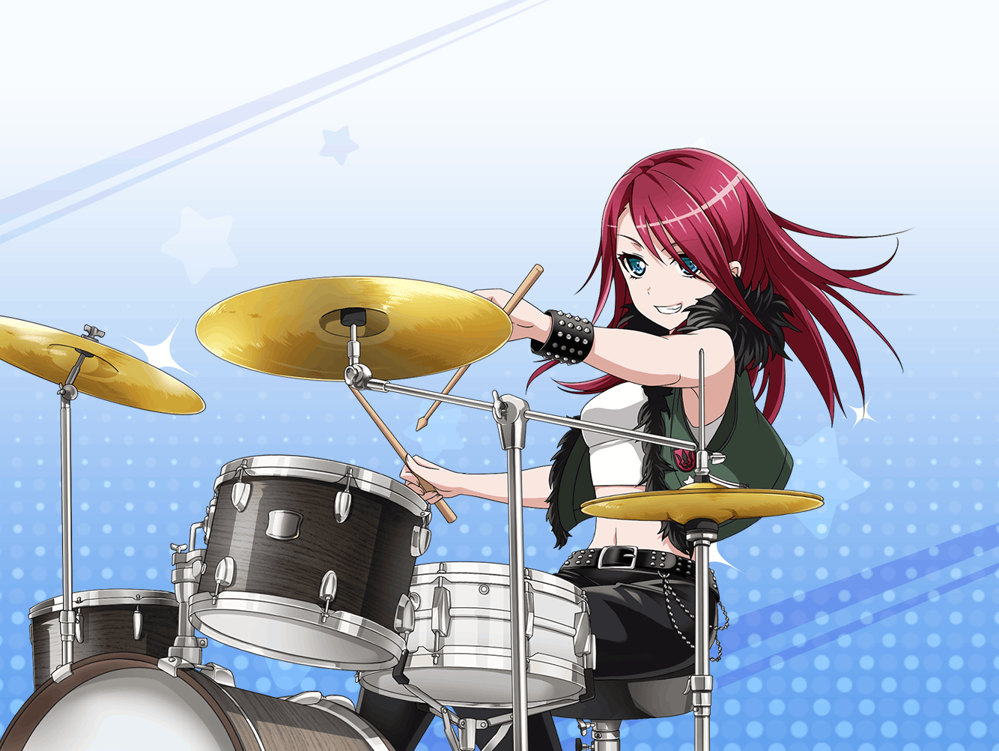

ひまり
みんなの衣装、いい感じのがゲットできてよかったね～！
蘭たち、気に入ってくれるといいなあ
巴
だな。蘭なんか『ダサいの以外』とか言ってたし……
気にいるといいけど
巴
これであとはアタシとひまりの衣装だけだな
ひまりの衣装、ちょっと考えてみたんだ
ひまり
えっ、巴が考えてくれたの？
巴
ああ、ひまりはいつも元気いっぱいだろ？
バンドでもそれ以外のときもたくさん動き回ってるから……
ちょっとスポーティな感じのワンピースとか、どうかな
ひまり
わあっ……！ なんかうれしいなーっ。
スポーティな服って普段あんまり着ないから、楽しみっ！
巴
うん。じゃあ、そういうイメージで探してみよう。
さて、そうなると最後はアタシだけど……
巴
まいったな……。
自分の衣装ってなると全然思いつかない
巴
なあ、ひまり。
アタシってみんなから見ると、どんなイメージなんだ？
ひまり
巴？ 巴はね～…まず、面倒見がよくて、
優しくて～……みんなのお姉ちゃんって感じ？
ひまり
でも、巴はどんなイメージって聞かれたら……
やっぱり一番は、カッコいいだよっ！！
巴
カッコいい？
アタシが？
ひまり
うんっ！ 巴って背も高いし、
さっぱりした性格だし、見た目もクールじゃん？
いつもカッコイイなって……私、ちょっと憧れてるんだ
ひまり
……な、なんちゃって！
巴
そっか……まさか、カッコイイって言われるとは思わなかったよ。
『怖そう』とかはよく言われたりするけどな。
サンキュ、ひまり
ひまり
えへへ。巴がカッコイイのはホントだもん♪
巴
それじゃあ、
アタシの衣装はひまりに決めてもらうことにするよ。
ちゃんと、カッコよくしてくれよ？
ひまり
えっ、いいの？
巴
もちろんだよ。ひまりが選んでくれたものなら
きっと間違いないだろ？
ひまり
えへへ、もっちろん！
それじゃ、お任せあれっ！
ひまり
ふっふっふー♪ 巴！ いいの見つけたよ～！
ひまりセレクトのこの服！ 着てみて～！
巴
……お待たせ。
どうだ？ 似合ってるか？
ひまり
わぁ～！ すっごくいい！ 似合ってるよっ！
やっぱり私の見立ては間違ってなかったな～。うんうん
巴
はは。まあ、ひまりが選んでくれた服だからな。
似合ってて当然だよな
巴
ひまり、ありがとう
ひまり
もぉ～、急にどうしたの、巴？
なんか照れちゃうよー！
巴
ひまりはアタシのこと一番わかってる気がするからさ。
アタシ自身なんかよりもずっとね
ひまり
ふふっ。そうかな？ でも、巴が私のこと
いーーっぱい信頼してくれてるのはうれしいな～
巴
ははっ。これ以上ないってくらい信頼してるよ。
だからこれからも頼むぜ？
ひまり
こちらこそ♪
それじゃ、みんなのとこに戻ろう！
みんなに試着してもらわなきゃ
巴
ああ、そうしよう